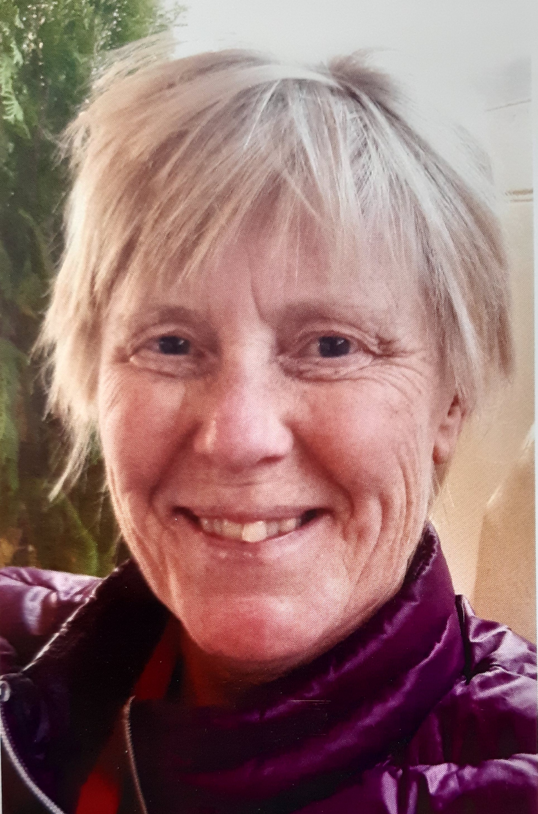

Jag har varit intresserad av personlig utveckling så länge jag kan minnas mitt och har aktivt och medvetet fördjupat mig och arbetat med mig själv sedan slutet på 80-talet. Då hittade jag och utbildade mig inom frigörande andning. Nyfikenheten på att ständigt upptäcka nya lager och nyanser av mej själv och livet har tagit mej djupt in i Moder jord genom t ex Shamanska svetthyddor, lärlingskap inom shamanism, pilgrimsvandringar i Himalaya och Peru och till ashram i Indien. Jag har dansat Gurdjeff´s heliga danser och frigörande dans, samt mediterat många år med Osho´s dynamiska meditationer. Jag är utbildad och certifierad inom healing och djurkommunikation både i Sverige och utomland. Allt detta har lett till att jag utvecklat min telepatiska förmåga som jag i dag använde både i healing och i min djupaste passion - att öka medvetenheten hos människor för djurens visdom, intelligens och kärlek. Det gör jag genom djurkommunikation, personlig healing och meditation. Min erfarenhet är att jag kan endast ge stöd och hjälp till någon annan om jag gått stigen själv innan.
3 år grundutbildning hos Ulla Anderén Divine Oneness healing och fortsatt mentorskap samt är certifierad lärare.
3 år grundutbildning inom shamanism hos Åsa Kullberg, Sweet Medicine sundance path.
10 dagar i Skottland Animal communication och deep nature connection med Lesley Downie och Jaqueline Buckingham.
Djurkommunikation med Susanna Davidsson, Skåne.
6 veckor online kurs, For the Love of animals med Anna Breytenbach och Brad Laughlin.